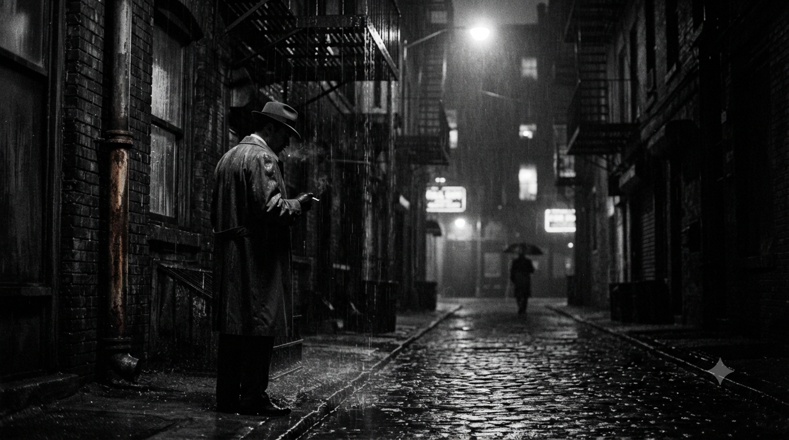
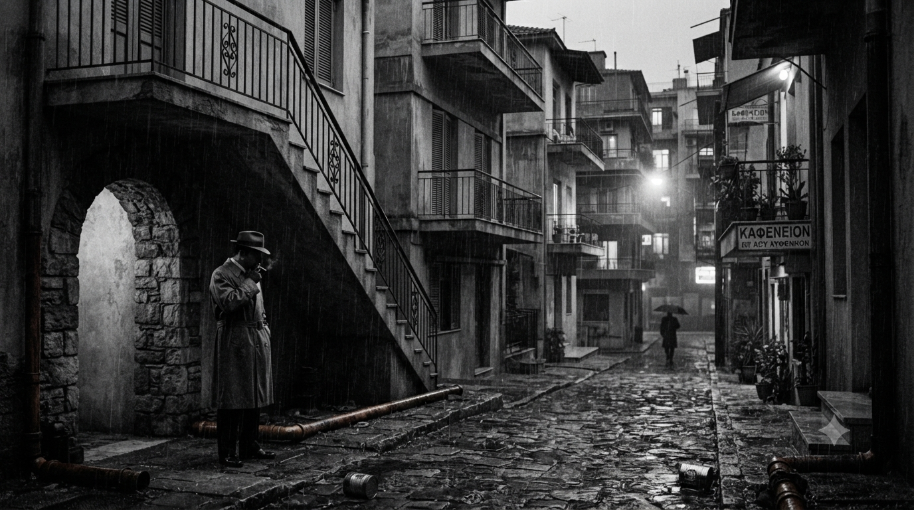
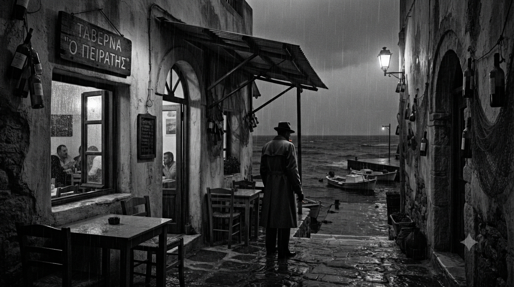
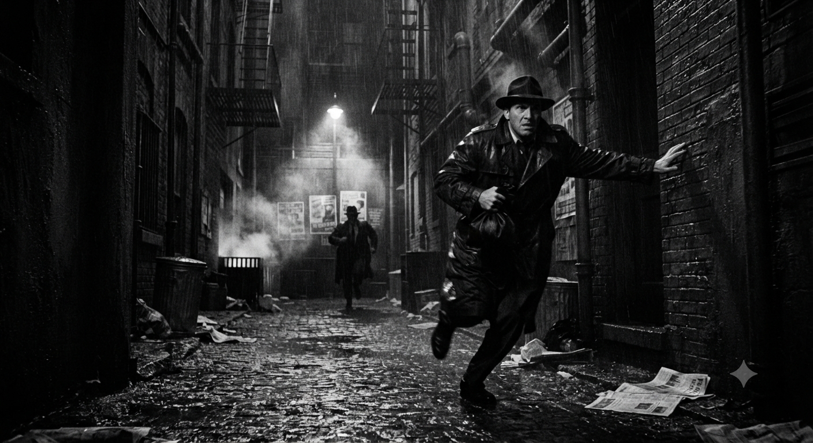

Πραγματικές υποθέσεις. Πραγματικοί άνθρωποι. Πραγματικά περίεργα πράγματα.
Διαβάστε τις υποθέσεις που έχω λύσει.

Εξαφάνιση
Ένα γραφείο σταματημένο στο χρόνο. Μια γυναίκα που δεν θα έπρεπε να ξαναφανεί. Και τρία λεπτά που άλλαξαν τα πάντα.

Δολοφονία
Ένα δωμάτιο. Πέντε ύποπτοι. Και ένας νεκρός που κανείς δεν περίμενε να είναι νεκρός.

Εκβίαση
Κρυμμένα σχέδια σε σκοτεινούς γωνιές. Κανένας δεν μιλάει, αλλά όλοι γνωρίζουν. Και η απλή αλήθεια ήταν πολύ περίπλοκη.
Απάτη
Μια κατοικία. Μια κάρτα πίστωσης. Και μια γυναίκα που άρχισε να κάνει ερωτήσεις που δεν θα έπρεπε να κάνει.

Κλοπή
Ένας κλέφτης που ήθελε να πιαστεί. Ένας ιδιοκτήτης σπιτιού που είχε άλλα προβλήματα. Και ένα ρολόι που δεν ήταν αυτό που έδειχνε.
Εξαφάνιση
Ένας άντρας που εξαφανίστηκε εσκεμμένα. Μια σύζυγος που ήξερε περισσότερα από όσα έλεγε. Και ένα μυστικό που δεν ήταν αυτό που όλοι νόμιζαν.